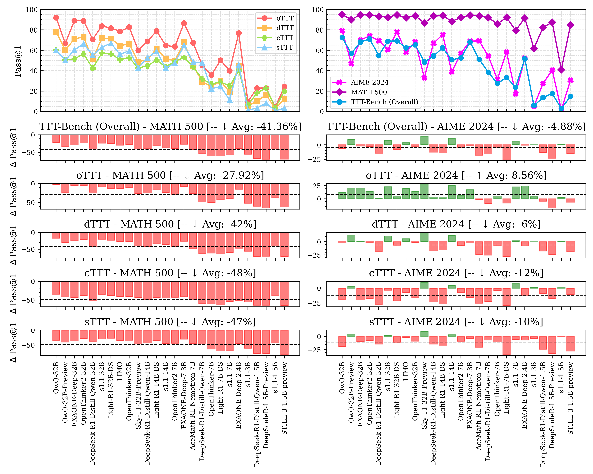
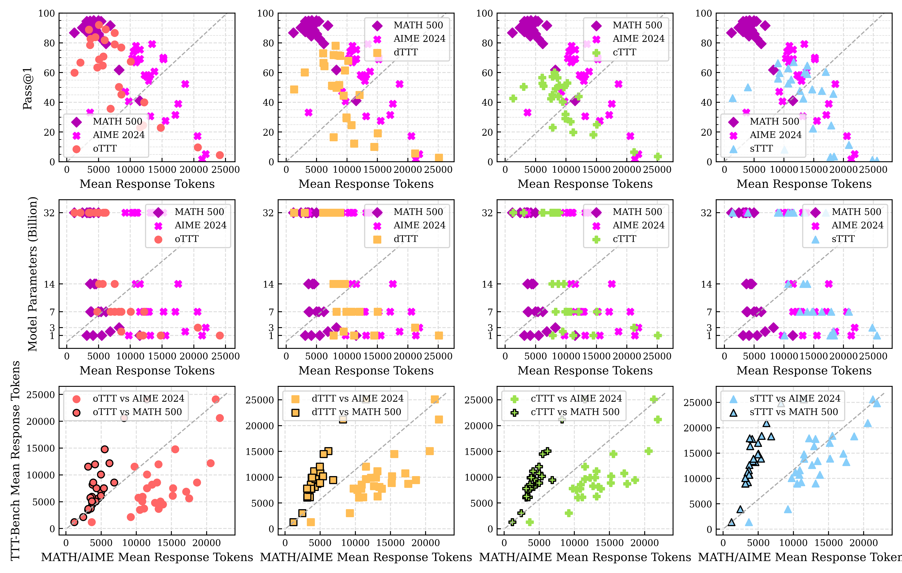

In this work:
- We introduce TTT-Bench benchmark to evaluate the reasoning capabilities of LRMs that are proficient in solving difficult math problems, on a broader domain of basic strategic, spatial, and logical reasoning tasks through a suite of four simple two-player Tic-Tac-Toe-style games.
- We evaluate a variety of state-of-the-art (SOTA) LRMs on TTT-Bench, and reveal a surprising finding: skilled at difficult math problems frequently struggle with these simpler reasoning tasks.
- This work not only highlights a fundamental shortcoming in LRMs, but also provides a new, simple, and scalable approach for automated verifiable two-player game generation, fostering future research efforts in evaluating the reasoning capability of LRMs.

In this work, we evaluate a comprehensive set of recent SOTA LRMs on TTT-Bench and conduct a head-to-head comparison of their performance on TTT-Bench versus two widely used mathematics benchmarks: AIME 2024 & MATH 500 (high school math), to thoroughly investigate the reasoning capabilities of these models.
Weak reasoning ability of LRMs on simple and intuitive tasks:- Given the simplicity of the TTT-Bench tasks, we expect Pass@1 scores of SOTA LRMs to be higher relative to their performance on math benchmarks (positive Δ Pass@1), especially for models that do well on math benchmarks.
- Surprisingly, we observed the opposite -- the majority of the evaluated models had lower Pass@1 scores on TTT-Bench compared to their Pass@1 scores on MATH 500 (↓ Avg Δ Pass@1: -41.36%) & AIME 2024 (↓ Avg Δ Pass@1: -4.88%).
- In the case of MATH 500, which consists of high school math problems, the drops are significant relative to all the TTT-Bench tasks across all the models, especially for the small models.
- The Δ Pass@1$ trends also illustrate the relative task reasoning difficulties over the TTT-Bench tasks, which are consistent across Δ Pass@1$ comparisons against both MATH 500 & AIME 2024: oTTT < dTTT < sTTT < cTTT.
- These performance trends indicate poor reasoning ability of SOTA LRMs on TTT-Bench tasks that are simple, intuitive, and of low complexity, compared to their performance on both MATH 500 & AIME 2024 questions that are difficult and require relatively more knowledge and complex reasoning efforts.
 Reasoning models struggle with simple long-term strategic reasoning:
Reasoning models struggle with simple long-term strategic reasoning:
- We investigate the type of reasoning tasks these LRMs are good at by analyzing their performance over these these individual solution verdict category questions.
- We observe that across the TTT-Bench tasks oTTT, dTTT, and sTTT, the performance of LRMs over questions that have the solution with verdict "Win" is consistently higher than the questions with verdict "Blocked", with the lowest for the questions with verdict "Fork".
- Whereas in the case of cTTT, the performance remained equally low for all the questions, independent of the solution verdict.
- This consistently high performance over questions with a solution verdict "Win" indicates that almost all the LRMs are capable of doing sound short-term thinking, where the solution is straightforward.
- On the contrary, a consistent dip in performance over slightly complex reasoning scenarios with "Blocked" & "Fork" solution verdicts indicates that the LRMs struggle to successfully solve simple long-term strategic reasoning tasks where the models need to explore more possibilities and think strategically to either block the opponent's win or to identify a position which can lead to a long-term assured win.

LRMs overthink on TTT-Bench, with an increase in model size resulting in improved performance and efficient use of chain-of-thought:
- We also do a comparision between:
- The task performance of the models against the mean length of the corresponding solution responses (Top).
- The model scale against the corresponding mean response lengths (Mid).
- The mean response lengths used for solving TTT-Bench task against the mean response lengths for solving math benchmarks for different models (Bottom).
- From these plots, we observe that LRMs solve MATH 500 questions with higher accuracy and shorter COT, whereas in the case of both AIME and TTT-Bench questions (especially dTTT, cTTT, & sTTT), models used longer COT with high variability and lower performance.
- This is counterintuitive, as the question is that TTT-Bench tasks are relatively simple, straightforward, and don't require as much thinking as is required to solve AIME questions.
- Consequently, we find that the larger models achieve higher performance using shorter COT across all the benchmarks, where the order of response lengths used for solving different benchmarks is: MATH 500 < TTT-Bench < AIME 2024.
- A head-to-head comparison between the generated solution response lengths for solving TTT-Bench tasks vs math benchmarks reveal that all the LRMs use longer COT for questions in TTT-Bench tasks against the MATH 500 questions, whereas they generate somewhat similar length COT when compared against AIME questions (especially in the case of sTTT against AIME).
- These findings suggest that these reasoning models consume similar amount thinking tokens for solving TTT-Bench tasks (even though they are trivial for humans) as used for solving olympiad-level math questions, and are found to produce long COT with circular, inconclusive, and repetitive thinking process for these trivial questions, further indicating their inability to do simple, intuitive, and straightforward tasks.